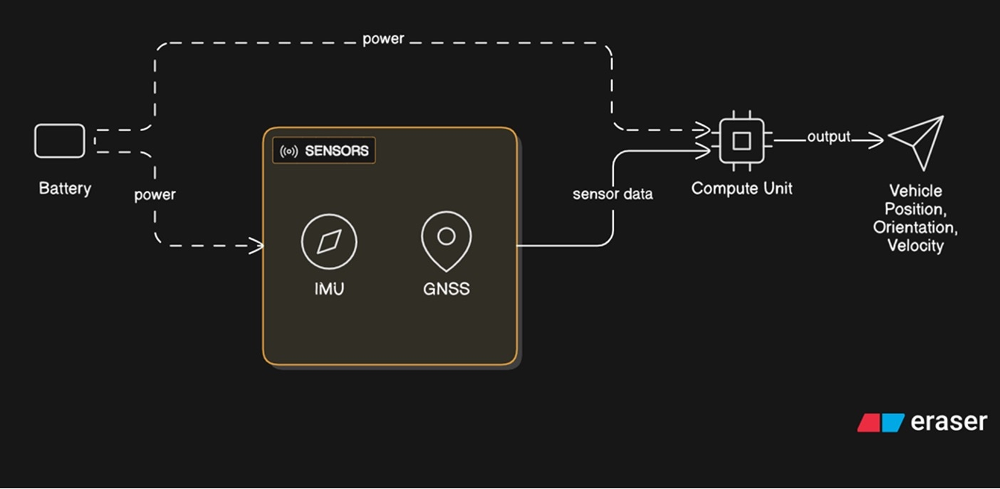
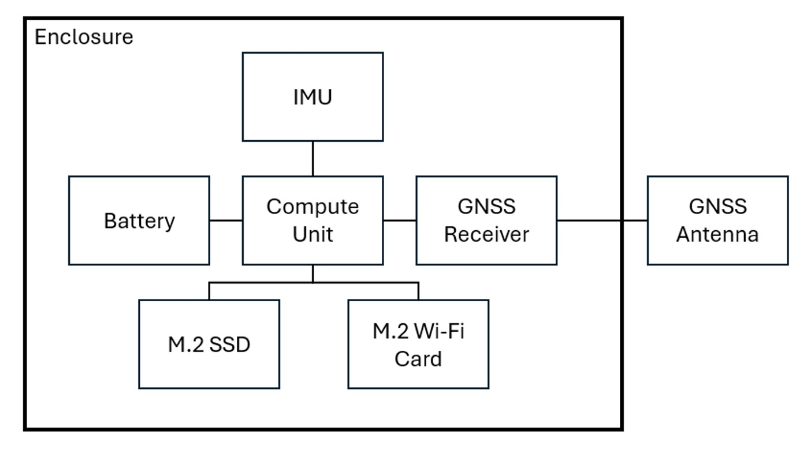
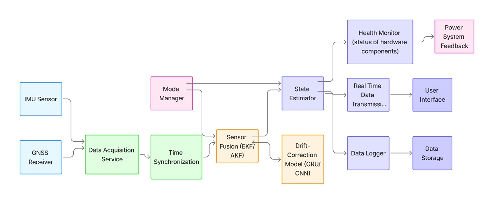
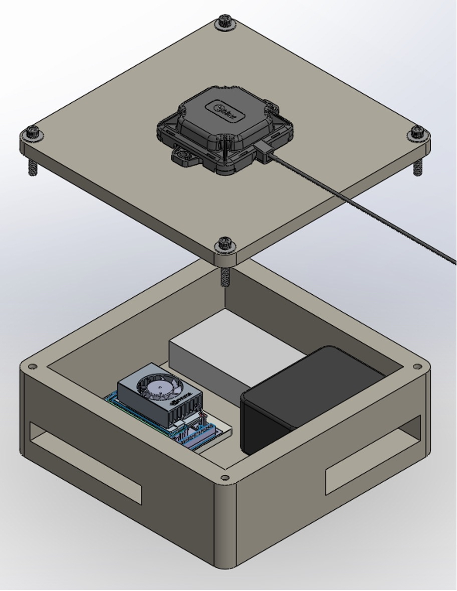

AI for Robust Navigation Solutions
Machine learning–assisted localization to reduce navigation drift in autonomous systems
Overview
This senior design project explores the use of machine learning to improve navigation robustness in autonomous robots operating under sensor noise and drift. Modern navigation systems rely significantly on a Global Navigation Satellite System (GNSS) for localization. In a world with GNSS-incompatible areas and bad actors using spoofing techniques to deny GNSS service, it is crucial to have an alternative reliable navigation method. Inertial measurement units (IMUs) attempt to fill this alternative navigation role as they utilize proprioceptive sensors for localizing, which do not rely on data from the environment, making them useful in GNSS-incompatible areas. However, IMUs are susceptible to accumulated error as they integrate noisy and biased data (acceleration and angular velocity) to get position and orientation. Over long trajectories, even small errors can lead to significant localization drift, reducing navigation accuracy and system performance. The goal of this project is to augment classical navigation pipelines with a learning-based correction approach to improve pose estimation stability and overall system reliability.
Technical Approach
- Execute multi-sensor fusion (IMU, GNSS, wheel odometry)
- Implement a machine learning model (AKF-GRU hybrid) to estimate and correct localization drift
- Compare learning-assisted pose estimates against baseline (GNSS)
- Evaluate performance under varying noise conditions and motion profiles
Visuals

High-level system architecture.

Physical integration and enclosure.

Software data flows and processing.

Isometric view of the CAD model with components (open).
Tools & Skills
Tools: SolidWorks, MATLAB, Python, PyTorch
Skills: Sensor fusion, ML integration, autonomous navigation